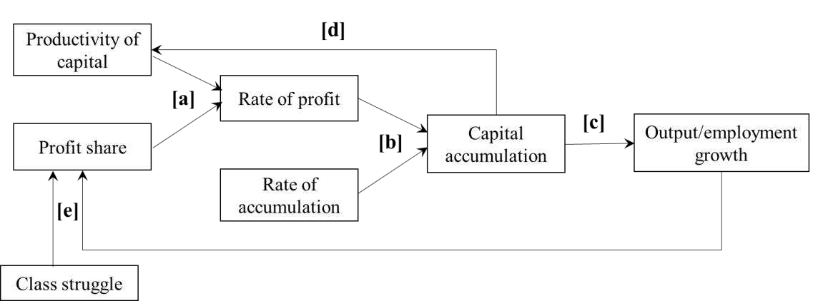

2 Growth Models
This paper seeks to evaluate the rate of profit and the rate of accumulation as determinants of the growth rate in Colombia during 1967-2019, using a VAR model.

The dynamic interaction between the Marxian ratios and the economic growth is also related to the technical change.
Technical conditions of production change with the accumulation of capital. The productivity of labor and capital intensity tend to change affecting, in turn, the productivity of capital and the rate of profit.
These specific changes have been classified in different types of technical change (Harrod-neutral, Marx-biased, Solow-neutral, etc.) that affects the profit rate in different ways. On the other hand, the profit rate is, in turn, a crucial variable in the choice of technology since the capitalists choose technologies that maximize their profit rate.
Finally, the (changing) technical conditions of production determine the degree to which accumulation translates into output and employment growth.
According with the previous literature review, the following general growth equation is estimated:
\[\begin{align} 𝑔 = 𝑓_1 (𝑟, 𝑎) \end{align}\]
where:
\(𝑔\) = Growth rate of per capita Colombian GDP.
\(𝑟\) = Rate of profit.
\(𝑎\) = Rate of accumulation (or rate of capitalization of surplus-value)
We expect to find that, ceteris paribus, an increase in the rate of accumulation or in the profit rate will increase the growth rate.
The empirical estimation of Marxian categories has been a controversial issue. Some authors have argued that Marxian ratios cannot be estimated from conventional national accounts since Marxian ratios are based on values that are abstract and unquantifiable by nature.
Nonetheless, there are several reasons that justify the use of conventional price-based statistics in the estimation of Marxian ratios.
On the one hand the Marxian ratios are dimensionless numbers, i.e., they are not expressed in value-labor or monetary units. Consequently, since monetary ratios are dimensionally compatible with value ratios, using the former as an estimate of the latter is legitimate due to the close empirical lineal relation between labor values and prices.
On the other hand, several authors have pointed out the monetary nature of Marx’s economic theory. Constant capital, variable capital and surplus-value are also monetary magnitudes.
The rate of profit is defined as the ratio of the surplus-value to the total capital invested. There are several methods to estimate the rate of profit from the national accounts data.
Most authors only use the stock of fixed capital in the denominator. Some authors embrace the unproductive/productive labor debate and, consequently, subtract the unproductive wages from the surplus-value, or only calculate the rate of profit for productive sectors. Some authors use fixed capital calculated at historical costs while the majority use fixed capital calculated at replacement costs.
The Marxian literature registers two methods to deal with the mixed income (income from small unincorporated enterprises owned by households and self-employed workers, i.e., non-capitalist commodity production).
Some authors divide that income into wages and profits while others do not include it in the estimation of the Marxian ratios. (??)
Following the majority of literature, we estimate the average rate of profit before taxes, \(𝑟_𝑡\) , for the overall Colombian economy as follows:
\[\begin{align} 𝑟_𝑡 = \frac{𝑃_𝑡}{𝐾_𝑡} \end{align}\]
\[\begin{align} 𝑃_𝑡 = 𝑌_t - 𝑊_t− MI_𝑡 − 𝐶𝐹𝐶_𝑡 \end{align}\] Where:
\(𝑃_𝑡\) = Estimated aggregated profits
\(𝐾_𝑡\) = Estimated stock of fixed capital
\(𝑌_𝑡\) = Colombian GDP.
\(𝑊_𝑡\) = Employee compensation
\(𝑀I_𝑡\) = Mixed income (income from small non-capitalist commodity production)
\(𝐶𝐹𝐶_𝑡\) = Consumption of fixed capital
The accumulation rate, \(𝑎_𝑡\) is the share of profits that is accumulated. This variable is also known as the rate of capitalization of surplus-value or the propensity to invest in Post Keynesian literature.
Mathematically:
\[\begin{align} 𝑎_𝑡 = \frac{𝐼_𝑡}{P_t} \end{align}\]
Where,\(𝐼_𝑡\) is the gross fixed capital formation (excluding residential buildings), and \(P_t\) are the aggreagte profits.
For descriptive purposes, we also calculate the decomposition of the rate of profit into the profit share and the productivity of capital:
\[\begin{align} 𝑟_𝑡 = \frac{P_𝑡}{K_t} = (\frac{P_t}{Y_t^c})(\frac{Y_t^c}{K_t}) \end{align}\]
Where,
\[\begin{align} Y_t^c = Y_t - MI_t - CFC_t \end{align}\]
As we exclude mixed income previously, both the profit share, \(𝑃_𝑡\) / \({𝑌_𝑡}^𝑐\) , and the productivity of capital, \({𝑌_𝑡}^𝑐\) / \(𝐾_𝑡\) , are calculated in relation to the capitalist new value, which is the GDP less the mixed income and the consumption of fixed capital. The profit share reflects the impacts of distributive factors in the rate of profit while the productivity of capital (also known as the potential maximum rate of profit) reflects the impacts of technological factors in the rate of profit.
The results are consistent with the theoretical predictions of the Marxian models and the Cambridge equation: growth rate will increase with the profit rate and the accumulation rate.
Performing a Vector Autoregressive (VAR) estimation with generalized impulse- response functions, we find that positive shocks in the rate of accumulation and the rate of profit raise the growth rate in the short-run. A feedback effect from the growth rate to the Marxian variables was also founded. All those results are consistent with and provide empirical support for the Marxian macroeconomic models reviewed in this paper. In those models, the growth rate is a process driven by the behavior of the rate of accumulation and rate of profit. The VAR models also allow us to explore the dynamic interactions between the Marxian ratios. We find an inverse simultaneous relationship between the rate of accumulation and the rate of profit. This finding could be explained by the compulsion to capital expansion in a context of decreasing profits. The results presented in this paper expand the body of Marxian empirical research on the rate of profit. Our econometrical analyses provide empirical support for the Marxian claim about the fundamental role of the rate of profit, and its constituent elements, in the accumulation of capital and, consequently, in the economic growth.